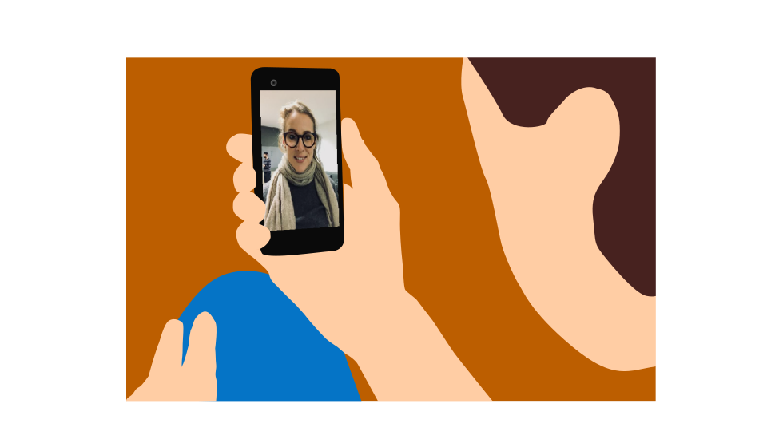

Apply To Codi
I clicked on the link that directed me to the online application. Wow, lots and lots of questions. There was even a question about a superhero. I wish really I was one. I would’ve been able to do much but I know also that superheros are real; they’re just not physically apparent like the ones we watch on movies and cartoons. God has made us super powers in our moral body and we have to know how to invest it.

The endless process of application started and I have managed to keep track of it and have made it to some advanced stages. I have wondered if I can still play the superhero and take the steps further.
At this point, every single step has become stressful and I have made myself in doubt if I can keep walking the mile. The choice was mine.. either I stop here because for me it isn’t worth it; or I continue the fight till the end stage. So I decided to follow the track, it will be hard but I made myself clear that I will get there.